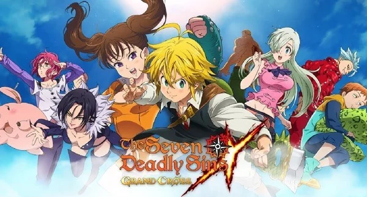
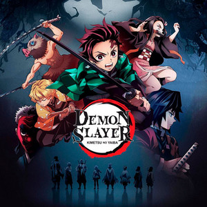
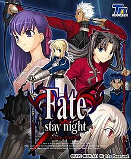
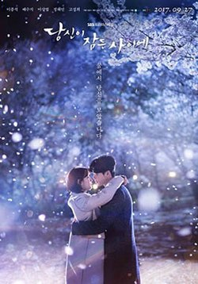
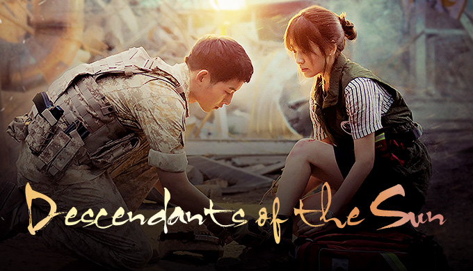
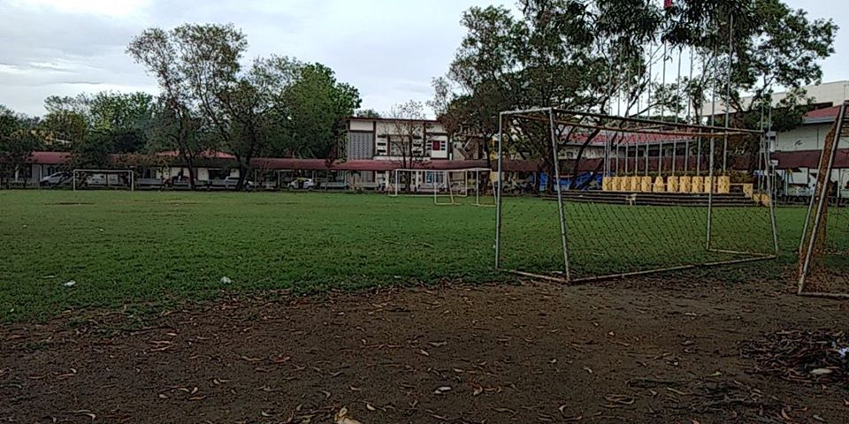
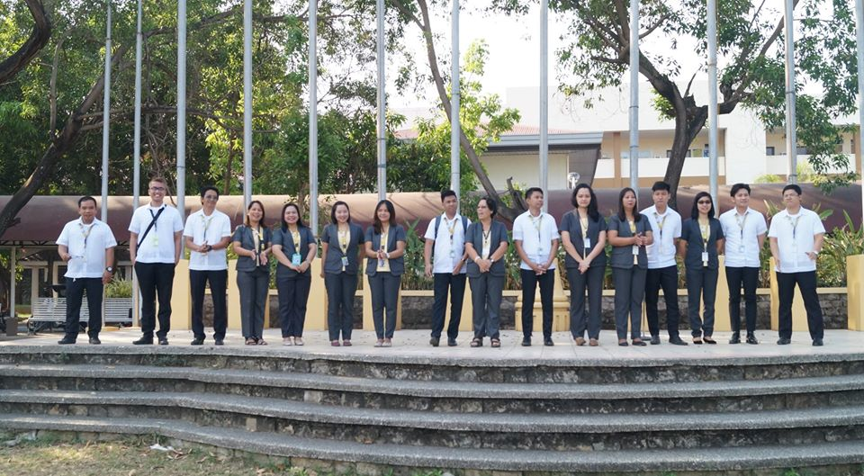
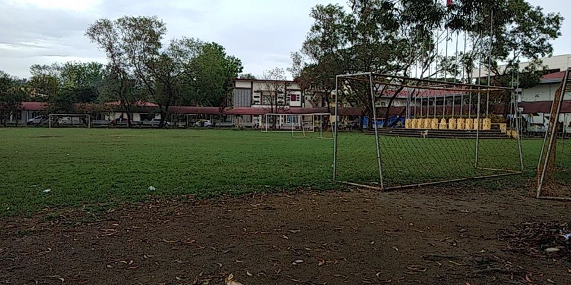
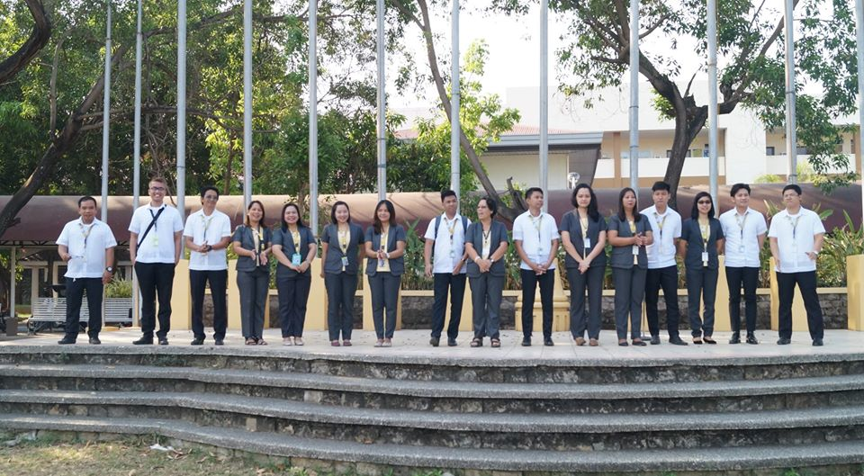

Classroom of the Elite is a Japanese light novel series written by Shōgo Kinugasa and illustrated by Shunsaku Tomose. A manga adaptation by Yuyu Ichino began its serialization in Media Factory's Monthly Comic Alive on January 27, 2016. An anime television series adaptation by Lerche aired from July to September 2017.
Author: Syougo Kinugasa Episodes: 12 (List of episodes) Genre: Psychological thriller Studio: Lerche English publisher: NA Seven Seas Entertainment Books: Classroom of the Elite (Light Novel) Vol. 1, Classroom of the Elite (Light Novel) Vol. 3 Trailer:click here
Seven Deadly Sins

The seven deadly sins, also known as the capital vices, or cardinal sins, is a grouping and classification of vices within Christian teachings, although it does not appear explicitly in the Bible. Behaviours or habits are classified under this category if they directly give birth to other immoralities.
Author:Nakaba Suzuki Episodes: 3 Seasons(24 episodes every season) Genre: Adventure Fiction, Fantasy Studio: A-1 Pictures English publisher: JNN (MBS)
Netflix Books: Seven Deadly Sins 20, The Seven Deadly Sins 23, MORE (Light Novel) Vol. 3 Trailer:click here
Demon Slayer

Demon Slayer: Kimetsu no Yaiba is a Japanese manga series written and illustrated by Koyoharu Gotōge. The story follows Tanjiro Kamado, a young boy who becomes a demon slayer after his family is slaughtered and his younger sister Nezuko is turned into a demon.
Author: Koyoharu Gotouge Episodes:26 (List of episodes) Genre: Manga, Graphic novel, Fantasy Fiction Studio: A-1 Pictures English publisher: Viz Media Books:Demon Slayer: Kimetsu no Yaiba, Vol. 1, 2, 3 Trailer:click here
Fate Stay/Night

Fate/stay night (フェイト／ステイナイト, Feito/sutei naito?) is a Japanese eroge visual novel game created by TYPE-MOON, which was originally released on January 30, 2004. It is TYPE-MOON's first commercial work, following its transition from a doujin soft visual novel group.
Author:
Kinoko Nasu Episodes:2 Seasons ( 24 episodes in every season) Genre:Dark Fantasy Studio: Studio Deen English publisher: NA
Anime Network,
Animax Books:Fate/stay night: Unlimited Blade Works (film),
Fate/stay night: Unlimited Blade Works (TV series),
Fate/kaleid liner Prisma Illya,
Fate/Zero Trailer:click here
K-Drama On The List
Doctor Stranger
A young doctor flees North Korea for life in the south, where he finds a woman who looks exactly like the woman he lost track of during his escape.
Author: Park Jin-woo; Kim Joo Episodes: 20 Episodes Genre: Medical drama, Romance Trailer: click here
While You Were Sleeping

While You Were Sleeping (Korean: 당신이 잠든 사이에; RR: Dangsini jamdeun saie) is a 2017 South Korean television series starring Lee Jong-suk, Bae Suzy, Jung Hae-in, Lee Sang-yeob, and Ko Sung-hee. Consisting of sixteen chapters distributed over 32 episodes, this legal drama-fantasy television series centers on the lives on three young adults—a field reporter, a prosecutor, and a police officer—who have acquired the ability to foresee future events through their dreams, after saving each other many years ago.
Author: Park Hye-ryun Episodes: 16 Episodes Genre:Romance, Fantasy, Thriller, Legal drama Trailer: click here
Descendants of the Sun

A love story between Captain Yoo Shi Jin, Korean Special Forces, and Doctor Kang Mo Yeon, surgeon at Haesung Hospital. Together they face danger in a war-torn country.
Author:
Kim Eun-sook Episodes:16 + 3 special episodes Genre:
Romance, Melodrama, Action Trailer: click here


 


